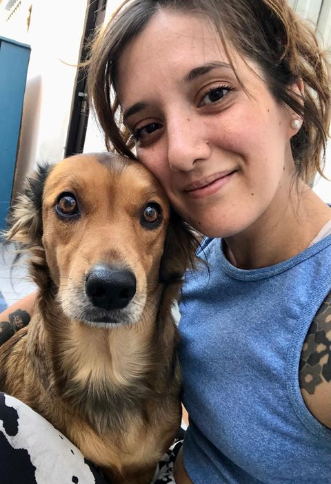
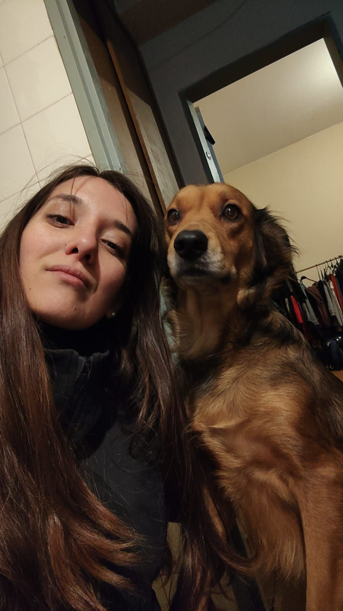
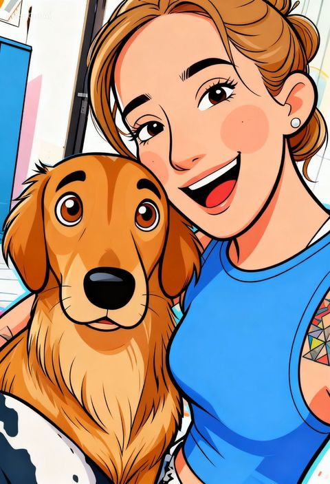
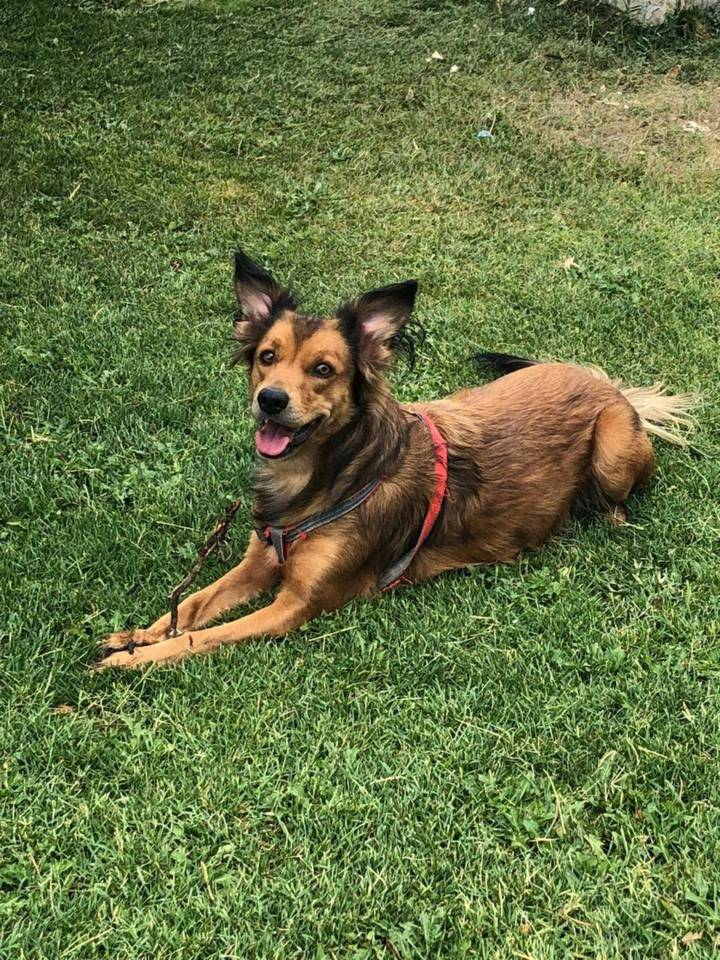
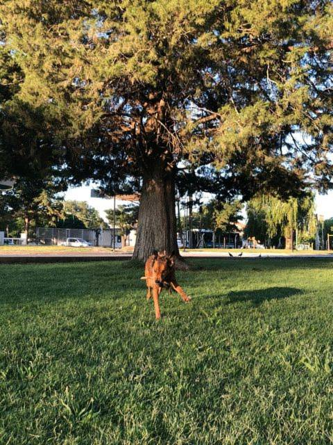

Calidad artesanal
Cada producto se elabora a mano, en pequeños lotes, para cuidar el detalle en cada paso.
Con amor para animalitos.



Poppy Pastelería es el proyecto de Ailu y de Poppy, su perrita, que le da nombre a la marca.
Hacemos tortas, galletitas y snacks para perros y gatos en Neuquén: a mano, por encargo y con ingredientes naturales, sin conservantes, para que cada mascota disfrute de un gustito sin riesgos para su salud.
Con amor para animalitos: esa es la idea que nos guía en cada pedido.


Poppy es la perrita de Ailu y la que le pone nombre a todo esto. Le encanta correr en la plaza y, por supuesto, probar cada gustito nuevo.
Ver lo que hacemosCada producto se elabora a mano, en pequeños lotes, para cuidar el detalle en cada paso.
Ingredientes aptos para mascotas, 100% naturales y sin conservantes.
Tratamos cada pedido como si fuera para Poppy.
Escuchamos cada necesidad particular para ofrecer opciones que realmente se adapten.

Escribinos y preparamos algo especial para tu mascota.